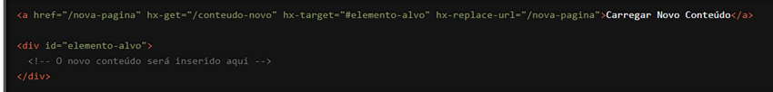

Estamos empolgados para apresentar a você uma funcionalidade do HTMX que permite um controle refinado sobre a atualização da URL do navegador sem recarregar a página: o atributo `hx-replace-url`. Com `hx-replace-url`, você pode modificar a URL do navegador dinamicamente à medida que o conteúdo da página é atualizado, proporcionando uma melhor experiência de navegação e mantendo a integridade da URL para compartilhamento e histórico. Vamos explorar como essa funcionalidade pode transformar suas interações web.
O que é o atributo `hx-replace-url`?
O `hx-replace-url` é um atributo do HTMX que permite substituir a URL do navegador após
uma requisição AJAX bem-sucedida. Ele é útil para manter a URL em sincronia com o estado
atual da página, sem a necessidade de um recarregamento completo. Isso é especialmente
importante para aplicações web que requerem URLs únicas para diferentes estados ou
visualizações.
Como Funciona?
Vamos ver um exemplo prático para entender melhor como o `hx-replace-url` pode ser usado.
Suponha que você tenha um link que, ao ser clicado, deve carregar um conteúdo e atualizar a
URL do navegador:

Neste exemplo, quando o link é clicado, uma requisição AJAX é feita para `/conteudo-novo`. Após a resposta ser recebida e o conteúdo ser inserido no `elemento-alvo`, a URL do navegador é atualizada para `/nova-pagina` sem recarregar a página inteira. Isso melhora a navegabilidade e permite que a nova URL seja compartilhada ou marcada como favorito.